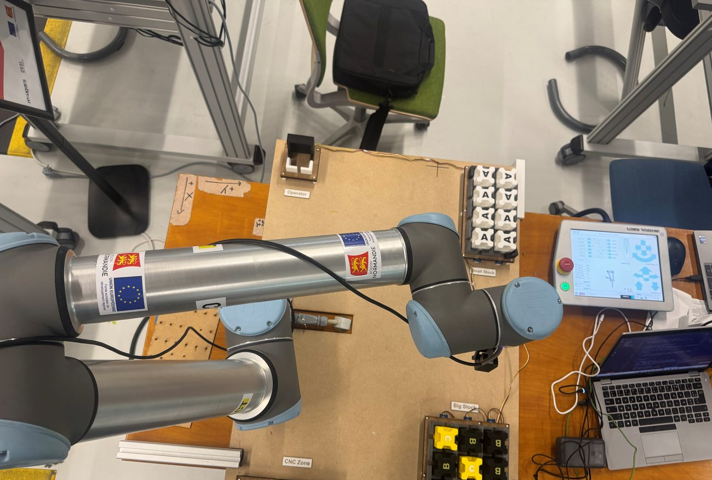
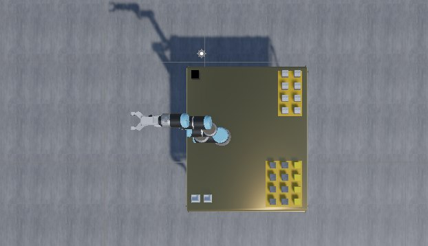

OPTIMAN — ordonnancement d'une cellule d'usinage robotisée
Septembre 2025 – aujourd'hui · Chercheur postdoctoral
CESI LINEACT et Maugars Industrie · soutien Région Normandie et FEDER
Le problème
Une cellule d'usinage réunit deux centres CNC, un robot de manutention partagé, des magasins rotatifs, des palettes, des montages et des opérateurs. Dans un modèle d'ordonnancement classique, une machine libre suffit à lancer une pièce. Ici, non.
Il faut que quatre conditions soient réunies en même temps : un centre d'usinage disponible, le montage compatible avec la phase à réaliser, une palette libre, et — pour la première pièce de chaque phase — un opérateur présent pour le réglage. Le robot, lui, est une ressource partagée : il ne peut pas charger deux machines à la fois, et ses déplacements s'intercalent entre les opérations.
Figure 1 — Une machine libre ne suffit pas : quatre ressources doivent converger, puis le robot doit être disponible pour le transfert.
Ce que j'ai fait
J'ai formalisé ces contraintes avec l'industriel, structuré et validé les données de production, puis développé l'outil de planification du projet, de l'import des données jusqu'à la restitution dans l'ERP.
Modèle de données de la cellule : gammes et phases, ressources, précédences, calendriers des opérateurs, compatibilités montage–phase.
Import Excel contrôlé : les fichiers de l'atelier sont lus, vérifiés ligne à ligne et refusés avec un message précis quand une donnée manque ou se contredit.
Moteur de planification en Python : une heuristique constructive place les opérations une à une en respectant les disponibilités de toutes les ressources ; le planning obtenu est ensuite noté par un score pondéré sur les indicateurs retenus.
Indicateurs de planning : retard par rapport aux dates dues, durée totale (makespan), temps morts des machines et du robot.
Restitution : diagrammes de Gantt de la production, des emplacements, des palettes et des montages, fiche détaillée de chaque opération.
Échange avec le jumeau numérique : export des opérations du robot, des opérateurs et des CNC, que le jumeau rejoue pour tester le planning.
Figure 2 — Des données de l'atelier au planning : le calcul est lancé et consulté depuis l'ERP, et ses résultats sont exportés pour le jumeau numérique.
Le module Odoo
L'atelier travaille déjà dans son ERP. Plutôt que d'ajouter un outil de plus à ouvrir, j'ai développé un module Odoo 12 qui porte les scénarios d'ordonnancement comme des objets de l'ERP : import des ordres de fabrication, paramétrage, lancement du calcul et consultation des résultats sans quitter Odoo. Les diagrammes de Gantt sont intégrés aux vues, sans dépendance aux modules Enterprise. Le module porte ses règles d'accès par société et ses tests de services et d'ORM.
Du planning au jumeau numérique
Un planning calculé reste une hypothèse tant qu'il n'a pas été confronté à la cellule. Le projet relie donc le planificateur à un jumeau numérique : avant d'être envoyé à l'atelier, le planning est rejoué en simulation pour vérifier qu'il est réalisable ; pendant l'exécution, l'écart entre le prévu et le réel est suivi, et un réordonnancement est déclenché quand il dépasse un seuil.
Cette boucle est complète sur la maquette du laboratoire, où un jumeau synchronisé suit la cellule en temps réel. Chez l'industriel, ce miroir en temps réel n'existe pas : les données de l'atelier remontent par relevés périodiques, et le jumeau sert à tester la faisabilité des plannings et à rejouer des scénarios pour le diagnostic.
OPTIMAN est un projet d'équipe. Le jumeau numérique, l'optimisation de l'implantation de la cellule et la maquette sont développés par l'équipe du projet à CESI LINEACT. Ma part est le planificateur, le module Odoo et l'échange de données avec le jumeau.
Le projet en images
Le jumeau numérique rejoue un planning : chaque transfert et chaque montage est vérifié dans la cellule virtuelle (42 s).Recherche d'une implantation de la cellule : les équipements sont déplacés et chaque configuration est évaluée (48 s).La maquette du laboratoire : un bras robot collaboratif exécute les transferts planifiés (26 s).

La maquette : poste opérateur, petit et grand stocks, zone CNC.

Son jumeau numérique, vu de dessus.
Vidéos et images : projet OPTIMAN, CESI LINEACT.
À quoi ressemble un planning
Le résultat se lit sur trois plans superposés : ce que font les machines, ce que fait le robot entre elles, et quand les opérateurs doivent être au poste. C'est cette superposition qui rend les conflits visibles.
Figure 4 — Schéma illustratif, données fictives. Les barres pleines sont des phases d'usinage, les barres grises les transferts du robot et les réglages opérateur.
Le manipuler soi-même
La démonstration interactive ouvre le visualiseur du module Odoo tel qu'il est utilisé dans le projet : Gantt des machines, du robot et des opérateurs, occupation des emplacements, des palettes et des montages, fiche de chaque opération, exports. Le planning affiché est un résultat enregistré : aucun calcul n'est exécuté en ligne.
Les schémas de cette page sont dessinés à partir de valeurs fictives. La démonstration interactive rejoue un planning calculé sur un jeu de données anonymisé : les références d'affaires, d'articles et de montages y sont remplacées par des codes génériques.
État du projet
Prototype de recherche, en cours. Le projet avance sur trois axes : la conception de la cellule à l'aide du jumeau numérique, l'ordonnancement et son intégration à l'ERP, et le diagnostic par simulation. Sur le deuxième axe, qui est le mien, un manuscrit est en préparation sur l'optimisation de l'ordonnancement par algorithme génétique et son intégration à Odoo.
OrdonnancementPythonHeuristique constructiveOdoo 12GanttJumeau numériqueDonnées de production